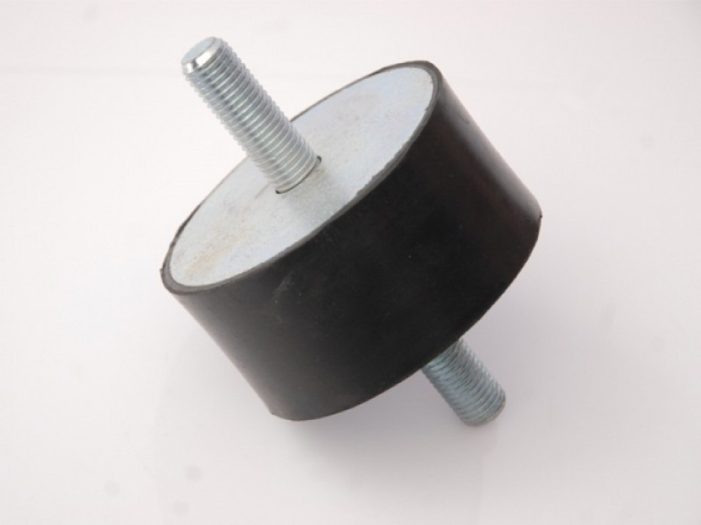
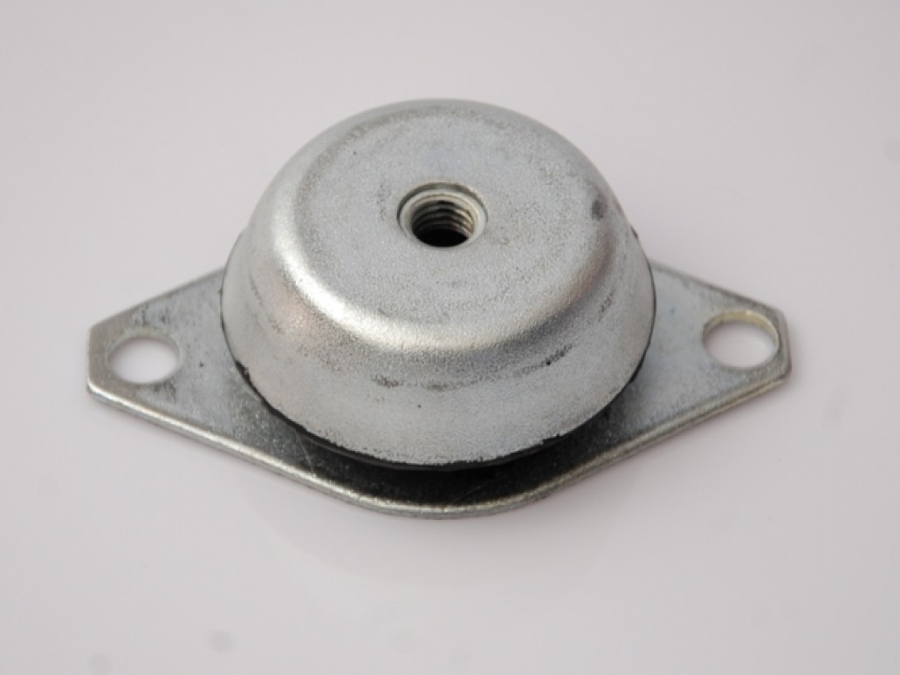
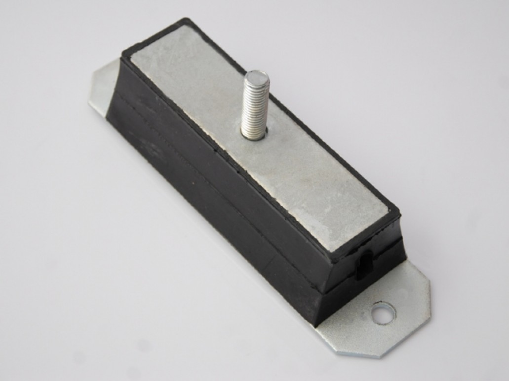
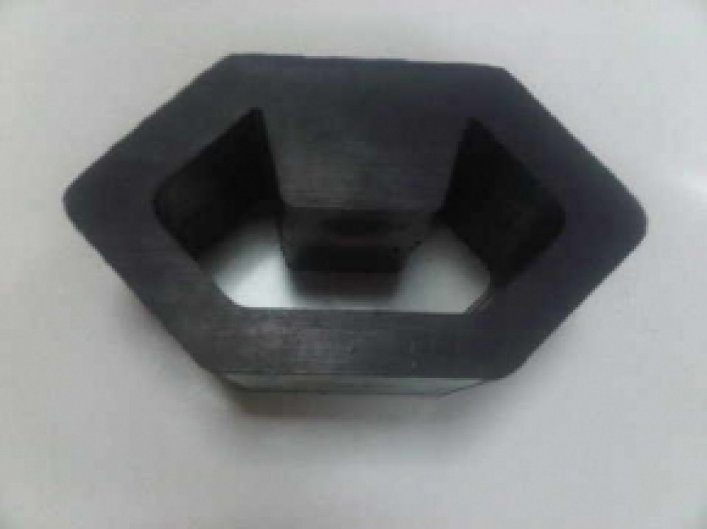

Otomotiv, makine, marin, asansör, beyaz eşya, iş makineleri ve jeneratör sanayileri için 45 – 90 Shore A sertlik aralığında; NR (Tabii), NBR (Nitril), EPDM, FKM (Viton), MVQ (Silikon), CR (Neopren) ve SBR kauçuktan CR+3 ve fosfat kaplamalı yüksek dayanımlı parçalar üretiyoruz.




Herhangi bir ürüne tıklayarak yüksek çözünürlüklü görselini, bağlantı şemasını, yüzey kaplama standardını ve Shore-A sertlik seçeneklerini inceleyebilirsiniz.
Yağ, yakıt, ozon, yüksek sıcaklık veya ağır dinamik yüke göre en doğru elastomer reçetesini 45 – 90 Shore A sertlik aralığında hazırlıyoruz.
55 Shore A: Genel amaçlı motor, fan, kompresör ve makine şasilerinde optimum elastikiyet ve yük taşıma dengesi.
Mükemmel mekanik dayanım, düşük kalıcı deformasyon ve yüksek yırtılma direnci sayesinde Silindir (A–E), Concave, Çan Tipi ve Elastik Flanga titreşim takozlarımızın ana elastomer malzemesidir.
NOSAB tesisimizde çevre, iş sağlığı ve güvenliği standartlarına uygun olarak kauçuk ve metalin ayrılmaz bir bütün halinde çalışmasını sağlıyoruz.
Yağ alma, kumlama ve korozyon direnci sağlayan CR+3 Çinko veya Çinko Fosfat yüzey kaplama işlemi.
Dinamik kesme ve çekme yüklerinde metal-kauçuk ayrılmasını önleyen çift katmanlı vulkanizasyon bağlayıcı uygulaması.
45–90 ShA sertlikteki NR, NBR, EPDM, Viton veya Silikon hamurun kontrollü sıcaklık ve basınç altında kalıplanması.
Her parti üretimde durometre sertlik ölçümü, ölçüsel kontrol ve çapak temizliği sonrası sevkiyat.
<meta property="article:tag" content="Otel" />, content="Mudanya" ve boş bırakılan <meta name="description" content="-"> etiketleri endüstriyel kauçuk-metal SEO yapısıyla değiştirildi.
<footer class="footer"></footer> tamamen boş bırakıldığı ve /haberler sayfası boş çıktığı için ziyaretçiler alt kısımda iletişim bilgisine ulaşamıyordu; tüm sayfalar tam kurumsal yapıya kavuşturuldu.